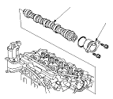

Camshaft Removal
Remove the air cleaner housing.
Remove the camshaft sprocket.
Remove the rocker arm assembly.
Remove the air cleaner housing bracket, ground cable and harness holder mounting bolt, then remove the harness holder from the bracket.
Disconnect the camshaft position (CMP) (top dead center (TDC)) sensor, connector, then remove the CMP (TDC) sensor, refer to the 2002 Jazz/Fit Shop Manual.
Remove the camshaft thrust cover (A), then pull out the camshaft (B).
